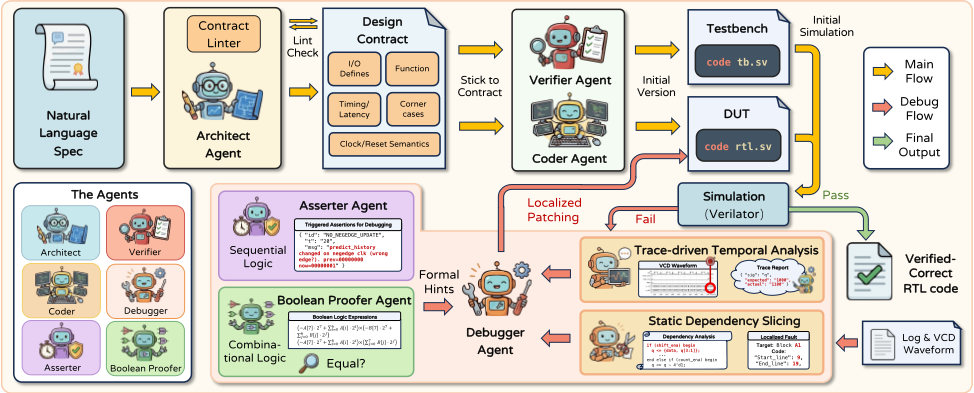
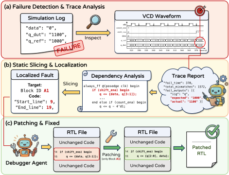
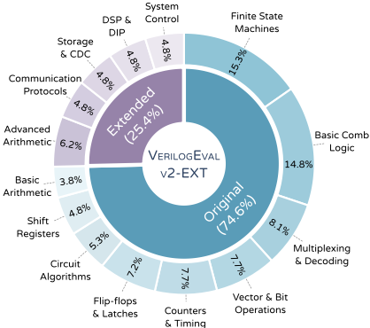
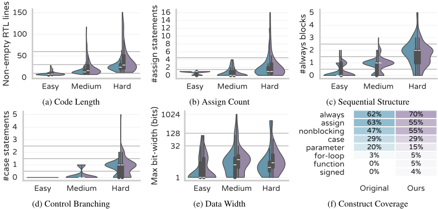
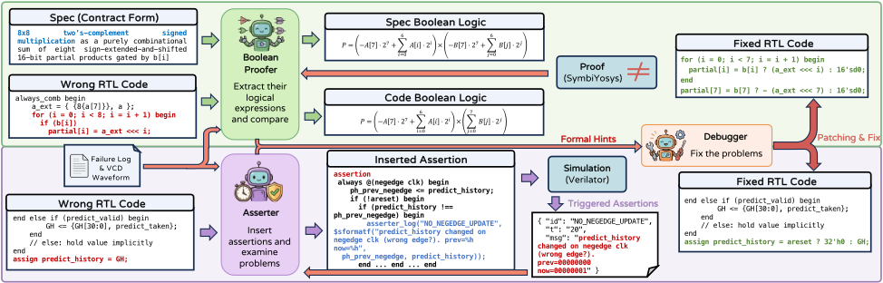
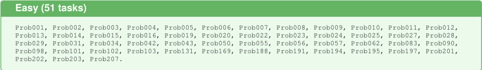
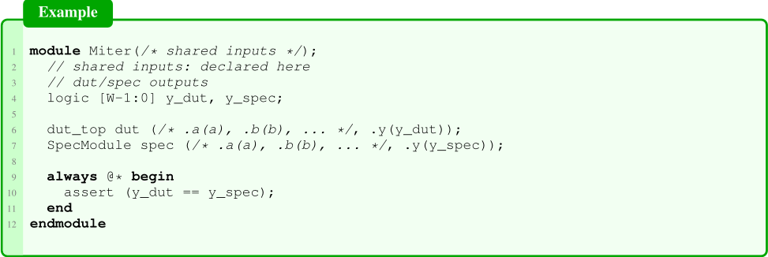

Veri-Sure：结合时序追踪与形式化验证、面向正确 RTL 代码生成的契约感知多智能体框架
论文针对 LLM 生成 RTL（硬件描述）代码正确性不足的问题：仿真为中心的评测覆盖有限、迭代调试引发回归与“修复幻觉”、多 Agent 交接间语义漂移。方法上提出 Veri-Sure 多智能体框架：Architect 将自然语言规格蒸馏为结构化 JSON 设计契约，作为全体 Agent 共享的单一事实源；Coder 与 Verifier 并行生成 RTL 与自校验测试台并用 Verilator 仿真；失败时 Debugger 依据波形追踪与静态依赖切片把故障定位到具体时间窗与最小信号集，仅做块级局部修补并配回滚规则；Asserter 生成时序断言、Boolean Proofer 用 SymbiYosys 做布尔等价证明，形式化提示注入修复流程。同时发布 VERILOGEVAL-V2-EXT 基准（新增 53 个工业级任务、共 209 题、含难度分层）。关键结论：Veri-Sure 达到 93.30% 功能 Pass@1（Hard 子集 85.07%），显著超过 GPT-5.2 单模型（76.56%）与 MAGE、VerilogCoder 等多 Agent 系统；消融显示追踪/切片/修补机制贡献最大，去掉形式化验证后 Hard 通过率下降 11.9 个百分点。
LLM 生成 RTL 代码的硅级正确性受三大瓶颈制约：(i) 以仿真为中心的评测测试覆盖有限、可靠性不足；(ii) 迭代调试中整文件重生成带来回归风险、修复幻觉与低效；(iii) 周期级精确意图在多轮迭代与 Agent 交接间被重新解释导致语义漂移。此外现有公开基准（如 VerilogEval-v2）以短教学模块为主，缺少工业级任务与难度分层，难以衡量真实进展。
提出 Veri-Sure 多智能体框架：(1) Architect Agent 将自然语言规格蒸馏为结构化 JSON 设计契约（模块接口、时钟/复位与时序语义、每输出延迟、含边界情况的功能摘要、测试计划），经 contract linter 校验后作为共享事实源，分别注入 Coder/Verifier/Asserter/Boolean Proofer 的提示；(2) Coder 生成可综合 RTL、Verifier 生成自校验测试台，用 Verilator 编译仿真；(3) 失败时 Debugger 做追踪驱动的时序诊断——从 VCD 波形提取失败时间窗并做 off-by-one-cycle 对齐检查，结合基于 tree-sitter-verilog AST 的静态依赖切片（有界反向 BFS）得到可疑块集合，仅允许块级读/替换的局部修补并施加基于失败签名的回滚规则；(4) Asserter 生成 SystemVerilog 断言检查时序义务，Boolean Proofer 从契约合成参考组合模型并构造 miter，用 SymbiYosys（Z3 后端）证明布尔等价，反例与形式化提示注入 Debugger 提示。另发布 VERILOGEVAL-V2-EXT 基准与基于结构复杂度评分的 Easy/Medium/Hard 难度分层。
VERI-SURE 在 VERILOGEVAL-V2-EXT 上取得 93.30% 整体功能 Pass@1（语法 100%），Hard 子集功能通过率 85.07%，优于 15 个独立 LLM、单 Agent 仿真反馈基线以及 MAGE、VerilogCoder 等多 Agent 框架
GPT-5.2 独立推理为 76.56%，仿真反馈循环为 77.99%，Hard 子集独立推理仅 59.70%
将开源 MoE 模型 DeepSeek-3.2 提升至 71.29% 整体功能 Pass@1（较独立推理 +10.05 pp，较单 Agent 反馈 +7.18 pp）
消融实验：移除 Tracing/Slicing & Patching 机制导致最大性能下降；移除 Formal Verification 使 Hard 子集通过率从 85.07% 降至 73.13%（-11.9 pp）
基准扩展：VerilogEval-v2 从 156 题增至 209 题（新增 53 个工业级任务），并按结构复杂度规则分为 Easy/Medium/Hard 三档（Easy 51、Medium 91、Hard 67 题）
相对已有 RTL 生成系统的区别：(1) 用结构化设计契约而非自然语言上下文作为多 Agent 间的共享事实源，显式抑制交接间的语义漂移；(2) 调试信号不依赖稀疏的 pass/fail 或文本日志，而是波形追踪+静态依赖切片定位到具体时间窗与最小信号集，并强制块级局部修补避免整文件重写与回归；(3) 在仿真之外引入契约驱动的双分支形式化验证（断言检查+布尔等价证明），可发现有限仿真覆盖不到的深层逻辑错误；(4) 发布带工业级任务与难度分层的扩展基准，支持更细粒度的失败模式诊断。
相关度级别：high
命中能力域：3.3 Agent 架构与工具使用 | 3.4 多智能体协作 | 3.5 评测与可靠使用 | 3.1 上下文工程与记忆
理由：虽然应用领域是 RTL/硬件代码生成而非团队日常业务场景，但框架的核心技术直接命中多个能力域：契约作为结构化中间表示注入各 Agent 提示、以单一事实源抑制语义漂移，属于 3.1 的结构化上下文组织与 3.4 的多 Agent 分工协作；验证工具（Verilator/SymbiYosys）在环的 Agent loop、失败定位与局部修补的执行可靠性设计属于 3.3；基准扩展方法、难度分层、消融实验与‘结构化 Agent 验证比原始反馈更有效’的实证结论属于 3.5。团队构建代码生成/审查 Agent 与多智能体工作流，‘契约+可执行验证反馈+局部修补+回滚’这套模式可直接迁移到软件代码 Agent 的质量保障上。
建议动作：深入精读并做内部分享
arXiv:2601.19747v1 [cs.AR] 2026年1月27日
Jiale Liu 1 Taiyu Zhou 2 Tianqi Jiang 3
在快速发展的电子设计自动化（EDA）领域中，将大语言模型（LLM）部署于寄存器传输级（RTL）设计已成为一个颇具前景的方向。然而，硅级正确性仍受制于以下瓶颈：(i) 以仿真为中心的评估在测试覆盖率与可靠性方面存在局限；(ii) 迭代调试所引入的回归与修复幻觉；(iii) 意图在 Agent 交接过程中被重新解读而导致的语义漂移。在本工作中，我们提出了 VERI-SURE，这是一个多智能体框架，它通过建立设计契约来对齐各 Agent 的意图，并利用由静态依赖切片引导的补丁机制来执行精确的局部修复。通过集成一个将迹驱动的时序分析与形式化验证（由基于断言的检查和布尔等价性证明构成）相结合的多分支验证流水线，VERI-SURE 实现了超越纯仿真的功能正确性。我们还提出了 VERILOGEVAL-V2-EXT，在原有基准测试（benchmark）的基础上新增了 53 个工业级设计任务和分层难度级别，并证明 VERI-SURE 在经验证正确的 RTL 代码生成方面达到了最先进的性能，超越了独立的 LLM 与先前的智能体系统。代码和数据集已在 GitHub 上公开。
在人工智能与数字化转型时代，对算力的爆发式需求持续推动芯片设计迈向数十亿晶体管的规模，也抬高了电子设计自动化（Electronic Design Automation, EDA）在生产率与正确性方面的门槛。在实践中，设计流程中的核心产物是寄存器传输级（Register-Transfer Level, RTL）描述，通常以 Verilog 和 SystemVerilog 等硬件描述语言（Hardware Description Languages, HDLs）编写，它规定了时钟状态以及寄存器之间的组合逻辑，在严格的时序约束下精确刻画并发的电路行为，并支撑下游的综合与实现。因此，编写高质量、可综合的 RTL 仍然是现代芯片开发中不可或缺却代价高昂的一步。
1 英国爱丁堡大学物理与天文学院，爱丁堡，英国 2 澳门大学模拟与混合信号超大规模集成电路国家重点实验室，澳门 3 香港中文大学（深圳）理工学院，深圳，中国。通讯作者：Jiale Liu < Jiale.Liu@ed.ac.uk > 。
大语言模型（Large Language Models, LLMs）近来在软件代码生成方面取得了快速进展（Jiang et al., 2026; Guo et al., 2024; Huang et al., 2025），这为直接从自然语言规格说明生成 RTL 代码提供了极具吸引力的机会。然而，RTL 代码生成提出了与软件截然不同的要求，因为 HDL 描述的是具有严格周期级时序、协议语义和层次化结构约束的并发硬件行为（Akyash & Mardani Kamali, 2025）。因此，为自回归的顺序文本生成而优化的通用编码模型往往只能达到表层的语法正确性，却无法可靠地保持时序意图、握手协议或全局一致的结构（Thakur et al., 2024）。相对于软件语料库，高质量 HDL 数据的稀缺进一步加剧了这些失败，这限制了模型接触高质量 RTL 模式以及真实的验证驱动开发实践的机会（Liu et al., 2024; Zhu et al., 2025）。
为弥合这一差距，近期的方法通过领域适配与工具增强来强化基于 LLM 的 RTL 代码生成，包括在精选的 HDL 语料库上进行监督微调（SFT）（Thakur et al., 2024; Lu et al., 2024; Liu et al., 2024）与强化学习（RL）（Zhu et al., 2025; Min et al., 2025b）、检索参考实现（Gao et al., 2024; Liu et al., 2023），以及结合仿真反馈的工具在环提示（tool-in-the-loop prompting）（Thakur et al., 2023; Ho et al., 2025; Zhao et al., 2025）。尽管与基线相比，这些技术提升了编译通过率和模块级功能通过率，但对于工业规模的 RTL 模块而言仍显不足，因为其正确性取决于微妙的时间边界情况（corner case）与多轮迭代精化。特别地，我们发现现有的基于 LLM 的流水线仍受以下瓶颈制约：(i) 以仿真为中心的评估导致测试用例覆盖率与代码可靠性有限；(ii) 调试过程中整文件重新生成所带来的回归风险、潜在幻觉与低效率；以及 (iii) 周期精确（cycle-accurate）意图在多次迭代或 agent 交接过程中被逐渐重新解读而导致的语义漂移。鉴于硬件缺陷可能在仿真中漏检并导致代价高昂的流片（tape-out）失败，一个有效的 RTL 代码生成系统不仅应能够生成 HDL 代码，还应能独立执行验证与调试，以确保整个设计的可靠性与正确性。
预印本。2026 年 1 月 28 日。
此外，面向工业级 RTL 代码生成的进展难以用现有的公开基准测试来衡量。诸如 VerilogEval-v2（Pinckney et al., 2025）等广泛使用的数据集以简短的教学模块为主，对关键工业需求的呈现不足，例如先进算术单元、通信协议、缓冲区/存储器控制、与跨时钟域（CDC）相关的模式以及流水线式设计。它们还缺乏用于诊断系统失效模式的难度分层。
为应对这些挑战，我们提出了 VERI-SURE——一个具有迹驱动时序分析与形式验证能力的契约感知多智能体框架。VERI-SURE 首先将自然语言规范提炼为结构化的设计契约，以固定接口语义和周期精确的设计意图，然后将该契约作为各智能体之间共享的事实来源。随后，它生成候选 RTL 代码并通过仿真加以验证。当仿真失败时，VERI-SURE 利用时序分析以及由契约导出的形式化检查（包括断言检查与布尔等价性证明）进行诊断。在诊断结果的引导下，它采用依赖切片引导的补丁修复方法执行精确的局部化修复，避免不稳定的整文件重写。最后，我们提出 VERILOGEVAL-V2EXT，它在 VerilogEval-v2 的基础上扩展了 53 个工业级任务以及基于结构的难度级别分类，从而实现更细粒度的评估。我们的主要贡献总结如下：
早期研究通过零样本或少样本提示，探索了利用通用大语言模型（LLM）进行开环RTL代码生成。ChatEDA (Wu et al., 2024) 和 ChipNeMo (Liu et al., 2023) 等系统展示了自然语言到RTL工作流的潜力，但也凸显了一个反复出现的差距：模型可能生成语法上看似合理的Verilog代码，却违反周期精确行为、协议语义或可综合性约束。
为了改进领域对齐，后续工作超越了朴素的提示方法，转向领域适配训练与生成脚手架。VeriGen (Thakur et al., 2024) 和 RTLLM (Lu et al., 2024) 的工作表明，在精选的HDL语料库上进行微调可以提升语法有效性和基本的模块级功能。RTLCoder (Liu et al., 2024) 进一步通过验证对样本进行过滤，以减少含噪的RTL模式。BetterV (Pei et al., 2024) 引入了生成式判别器，将输出引导至更易于验证的实现，而 CodeV-R1 (Zhu et al., 2025) 则将微调与多级代码摘要相结合，以提升长程一致性。与此正交的是，AutoVCoder (Gao et al., 2024) 利用检索增强生成（RAG），使综合过程以相关参考设计为条件。
尽管取得了稳步进展，这些方法在应对并发电路行为和严格的时序要求时仍然存在困难，主要原因在于它们缺乏迭代修复机制，而迭代修复正是实际EDA工作流的核心。
近期工作已转向工具在环（tool-in-the-loop）与智能体化（agentic）流水线，即迭代地生成 RTL、运行仿真并修复失败。AutoChip (Thakur et al., 2023) 利用仿真器反馈实现闭环，RTLFixer (Tsai et al., 2024) 则通过错误驱动的编辑支持迭代调试。这些方法能够减少语法错误和浅层功能缺陷；然而，其调试信号主要由稀疏的通过/失败结果或文本日志构成，对于诊断时序相关的失败以及定位多周期设计中的根本原因而言，所提供的可观测性十分有限。

另一条互补的研究路线通过从结构化监督中学习来强化 RTL 代码生成。VeriSeek (Wang et al., 2025) 引入了结构感知的目标（例如基于 AST 的信号），以在测试通过率之外鼓励与硬件一致的模式，而 QiMengSALV (Zhang et al., 2025) 则引入信号感知学习，以强调关键控制信号的行为。VeriLogos (Min et al., 2025b) 将合成数据增强与强化学习相结合，以同时提升多样性与正确性；DeepRTL (Liu et al., 2025) 则探索课程式训练，以更好地对齐自然语言意图与 RTL 语义。尽管这些方法提升了鲁棒性，其监督仍通常以仿真为中心，在罕见的时序边界情形与复杂协议行为上留下覆盖缺口。
随着任务扩展到更大的子系统和多模块设计，研究者提出了多智能体（multi-agent）框架，将工作流分解为规划、编码和检查。REvolution (Min et al., 2025a) 将生成构建为一种由 LLM 驱动变异的进化搜索，VerilogCoder (Ho et al., 2025) 协调多个协作 Agent 进行生成与验证，MAGE (Zhao et al., 2025) 则通过多样化采样和针对性调试提升候选解的质量。AssertLLM (Yan et al., 2025) 强调将断言作为一种能更好编码架构意图的机制。尽管取得了这些进展，大多数智能体化系统仍然严重依赖测试覆盖，常常采用可能引发回归的粗粒度编辑，并可能在多次迭代与 Agent 交接过程中累积语义漂移；其评估也通常依赖简短的教学型基准测试（benchmark）。这些缺口促使我们提出 VERI-SURE——它结合了基于轨迹的时序诊断、局部修补与形式化检查——以及我们的 benchmark 扩展，后者旨在更好地反映工业界任务的分布与难度。
我们提出了 VERI-SURE，这是一个多智能体（multi-agent）框架，它为从自然语言进行 RTL 综合带来了真正 EDA 风格的开发与测试闭环。VERI-SURE 并不将生成视为一次性的翻译问题，而是将代码综合与自动化验证以及可操作的调试信号紧密耦合在一起。与以往主要通过自然语言上下文进行协调、因而面临规格漂移以及粗粒度、易引发回归的重写风险的多智能体系统不同，VERI-SURE 采用基于轨迹的分析，将失败定位到具体的时间窗口、信号和被违反的需求上，从而支持针对性修复，并提升在多周期极端用例上的鲁棒性。它还将仿真与形式化检查相结合，以持续确保设计需求得到满足并辅助调试。
图 1 展示了 VERI-SURE 的工作流程。该流程始于 (1) Architect Agent，它将用户提示提炼为结构化的 JSON 格式设计契约，其中涵盖被测器件（Device Under Test, DUT）的接口（端口、时钟/复位约定）、关键参数以及周期精确的行为需求。当存在参考测试平台时，Architect 会对接口与时序细节进行交叉核对，以减少歧义。基于该规格说明，(2) Verifier Agent 生成一个自校验的测试平台，其激励与检查器均与所规定的需求保持一致。与此同时，(3) Coder Agent 以同一规格说明为条件生成可综合的 RTL 代码。随后，我们调用 Verilator 将代码与测试平台一同进行编译和仿真；只有当所有检查均通过时，设计才会被接受。
当编译或仿真失败时，VERI-SURE 会进入由 (4) Debugger Agent 主导的自主调试循环。Debugger 并非仅仅依赖文本形式的错误信息，而是利用基于轨迹的时序诊断：它通过我们的切片机制对日志与波形进行分析，将失败定位到具体的时间窗口以及一个最小化的相关信号集合。为进一步锐化反馈信号，(5) Asserter Agent 会生成针对性的时序断言以暴露时序/协议违规，而 (6) Boolean Proofer Agent 则对局部化的组合逻辑约束执行检查，以验证候选修复并防止回归。Debugger 聚合这些信号，对 RTL 代码施加最小化的局部修改，并不断迭代，直至所有验证检查均得到满足。
自然语言形式的 RTL 规格说明常常在复位极性、采样边沿或周期延迟等细节上规定不足，这很容易导致各 Agent 之间产生不一致的理解。VERI-SURE 通过让 Architect agent 将提示词（prompt）编译成一份紧凑的结构化设计契约来缓解这一问题，该契约在任何代码编写之前就使这些设计选择变得明确。
最终得到的契约刻意保持紧凑，却足以驱动整个流水线：它记录了所选的事实来源（source of truth）、带类型的模块接口、时钟/复位与时序语义、每个输出的延迟、包含边界情况（corner case）的精确功能摘要、一份定向测试计划，以及面向 verifier、coder 和 debugger 的指导。当提示词对某些细节规定不足时，Architect 会将所做假设显式写出，使其成为可检查的需求。随后，一个轻量级的契约 linter 会对 schema 与基本一致性进行校验，防止格式错误或自相矛盾的契约传播到代码生成与验证环节。
当仿真失败时，主要挑战在于如何将不透明的失配计数转化为最小且可操作的编辑，同时不使无关逻辑失稳。VERI-SURE 通过一个闭环调试流水线来解决这一问题，该流水线将动态证据（即波形）与静态结构（即代码依赖）相耦合，为 Debugger 生成一个补丁任务，而不是全文件重写，如图 2 所示。
迹驱动的时序分析 从仿真器日志中，我们识别出最早的偏差时间以及导致偏差的信号。令 O_DUT(t) 和 O_exp(t) 分别表示 t 时刻的观测输出向量和期望输出向量；我们定义

然后，我们从值变化转储（Value Change Dump, VCD）文件中提取一个以 t_f 结尾的短波形窗口，并按照契约定义的时钟方案对其进行采样。除原始值外，迹报告器（trace reporter）还会执行一次轻量级对齐检查，通过测试小幅偏移来检测系统性的差一个周期（off-by-one-cycle）或错误边沿（wrong-edge）错误，并将最佳匹配偏移作为时序提示进行报告。所有发现都会被汇总到迹报告中，包括失配信号、失配周期以及相关的迹切片。
静态依赖切片 为避免无重点的编辑，迹切片器（trace slicer）将注意力限制在可能影响失配输出的逻辑锥内。我们将 RTL 解析为语义块，例如使用连续赋值和 always 块，并计算每个块的读/写集合 R(B) 和 W(B)。当一个块读取另一个块所写的内容时，两个块之间就存在一条依赖边：
以失配信号为种子，我们执行一次有界后向遍历，以获得一个较小的嫌疑集合 B_sus，其中包含块标识符和行范围。这把“输出失配”转化为“这几个块是可能的原因”，从而大幅缩小了呈现给 Debugger 的搜索空间。
局部补丁 Debugger 只能通过块级读/替换操作来编辑 B_sus 中的块；文件的其余部分原样保留。每个补丁都会立即通过重新编译和重新仿真来检查，并应用一条简单的回滚规则以防止回归。记 σ(RTL) = (t_f, m) 为首失配时间和总失配数，只有当补丁改善了失配特征时我们才保留它，即首次失配时间更晚，或同一 t_f 下失配数更少；否则我们回退该补丁。该循环将修复过程锚定在具体迹的基础之上，同时保持跨迭代的稳定性。
我们提出 VERILOGEVAL-V2-EXT，这是一个扩展的基准测试（benchmark），用于评估大语言模型（LLM）在真实场景下进行 RTL 代码生成的能力。该基准测试在 VerilogEval-v2（Pinckney et al., 2025）的基础上新增了 53 个全新的工业级设计任务，使问题总数从 156 个增加到 209 个。所有任务均遵循与 VerilogEval-v2 相同的评估协议：每个问题都提供自然语言规格说明、完整定义的模块接口，以及用于功能检查的可执行测试平台（testbench），从而能够与先前结果进行直接比较。

VerilogEval-v2 offers strong coverage of basic digital logic problems, but it under-represents modules that dominate real RTL development (e.g., protocol controllers, buffering, and multi-cycle datapaths). As a result, models may achieve high scores while still failing on engineering-critical behaviors such as latency alignment, corner-case handling, and stateful control logic.
To address these gaps, we curated 53 new problems that reflect common Intellectual Property (IP) blocks and system components, including communication protocols and buffering (e.g., Universal Asynchronous Receiver Transmitter (UART) interfaces and First-In-First-Out (FIFO) queues), control-dominated designs (e.g., nontrivial Finite State Machines (FSMs), and richer datapath modules (e.g., advanced arithmetic and DSP-style kernels). Figure 3 summarizes the resulting benchmark composition and details are provided in Appendix A.
为了支持超越总体通过率的更细粒度分析，我们采用一种基于规则的复杂度评分，将这209个问题划分为简单/中等/困难（Easy/Medium/Hard）三个层级；该评分源自可观测的结构信号，包括代码行数、assign/always/case 构造的数量以及数据通路宽度，并辅以人工审查。完整的评分细节和阈值见 A.3 小节。图4显示，该扩展提升了结构复杂度，尤其是在困难（Hard）子集中（例如，解决方案更长、时序结构更多、数据通路更宽，最高达1024位）。

总体而言，这些新增内容使 VERILOGEVAL-V2-EXT 成为一个更具区分度且更贴合工业界需求的测试平台，可用于评估端到端的 RTL 代码生成与调试。
基准测试 我们在 VERILOGEVAL-V2EXT benchmark 上进行评估，并报告语法正确性与功能正确性方面的 Pass@1。语法成功是指仿真器能够无错误地编译所生成的 RTL 代码。功能成功是指编译后的被测设计（DUT）通过了所提供的 testbench。
基线方法 我们将 VERI-SURE 与 15 个独立的大语言模型（LLM）1 进行比较，这些模型涵盖商业闭源模型与近期的开放权重模型，且均在单次尝试中生成 DUT。我们还纳入了单智能体仿真器反馈基线，将大多数 2 模型置于迭代的编译/仿真循环中，并把 Verilator 日志回传用于重新生成。最后，我们使用最新的骨干模型评估了具有代表性的多智能体框架 MAGE (Zhao et al., 2025) 与 VerilogCoder (Ho et al., 2025)，并在表 1 中报告所有比较结果。
1 为清晰起见，我们在此处而非表格中列出这些模型：GPT-5.2 (OpenAI, 2026)；Claude-4.5-Sonnet (Anthropic, 2025)；Gemini-3-Pro (Google Deepmind, 2025)；Qwen3-Max、Qwen3-Coder-Plus (Qwen AI, 2025b;a; Yang et al., 2025)；MistralMedium-3.1、Ministral-3-14B、Devstral-2 (Mistral AI, 2025b; Liu et al., 2026; Mistral AI, 2025a)；DeepSeek-3.2 (DeepSeek-AI et al., 2025)；LLaMA-4-Maverick (Meta AI, 2025)；GLM-4.7 (Zhipu AI, 2025; Team et al., 2025)；QiMeng-SALV (Zhang et al., 2025)；RTL-Coder (Liu et al., 2024)；CodeV-R1 (Zhu et al., 2025)；VeriLogos (Min et al., 2025b)。
2 遗憾的是，我们无力承担将 Claude 作为智能体系统运行的开销。
工具链与计算资源 所有方法均使用相同的 testbench 与验证工具链。我们使用 Verilator 进行语法检查与仿真，之所以选择它，是因为它对我们 Asserter 所使用的 SystemVerilog 断言式检查具有更好的支持。在布尔证明方面，我们使用以 Z3 为后端的 SymbiYosys。商业模型通过官方 API 进行查询；开放权重模型则在 NVIDIA A100 80GB GPU 上本地运行。迭代方法最多限制为 K = 10 轮修复迭代。
表 1 报告了在 VERILOGEVAL-V2-EXT 上语法正确性与功能正确性的 Pass@1 结果，并进一步按难度细分。我们观察到以下关键现象：
前沿闭源模型开箱即用即表现强劲：在独立使用的 LLM 中，商业闭源模型始终保持着较高的语法成功率和较强的功能准确率，尤其是在 Medium 和 Hard 任务上。这表明，即使没有针对硬件的专门微调，大规模通用预训练也已经在 RTL 代码生成和代码级推理方面赋予了相当强的能力。
专用小模型落后于通用大模型：相比之下，针对 RTL 代码生成进行微调的较小模型并不一定优于最先进的通用大模型。虽然这些模型通常能取得尚可的语法通过率，但在较难的任务上，其功能通过率明显更低，这表明参数规模和广泛的预训练对于多步时序推理、边界情况以及控制密集型设计仍然至关重要。从实践角度来看，仅靠微调难以弥合这一差距，因为训练大型骨干网络是计算密集型的。
| Method.Method | Params.Params | Easy ( n = 51 ).Syn. | Easy ( n = 51 ).Func. | Medium ( n = 91 ).Syn. | Medium ( n = 91 ).Func. | Hard ( n = 67 ).Syn. | Hard ( n = 67 ).Func. | Overall.Syn. | Overall.Func. |
|---|---|---|---|---|---|---|---|---|---|
| Standalone LLMs | |||||||||
| GPT-5.2 | - | 100.00 | 94.12 | 100.00 | 79.12 | 100.00 | 59.70 | 100.00 | 76.56 |
| Claude-4.5-Sonnet | - | 100.00 | 90.20 | 100.00 | 74.73 | 97.01 | 53.73 | 99.04 | 71.77 |
| Gemini-3-Pro brain | - | 100.00 | 94.12 | 100.00 | 85.71 | 100.00 | 62.69 | 100.00 | 80.38 |
| Qwen3-Max | - | 96.08 | 86.27 | 93.41 | 54.95 | 86.57 | 37.31 | 91.87 | 56.94 |
| Mistral-Medium-3.1 | - | 100.00 | 78.43 | 87.91 | 52.75 | 77.61 | 19.40 | 87.56 | 48.33 |
| DeepSeek-3.2 | 685B (37B) | 96.08 | 80.39 | 96.70 | 64.84 | 85.07 | 41.79 | 92.82 | 61.24 |
| Qwen3-Coder-Plus | 480B (35B) | 92.16 | 80.39 | 91.21 | 60.44 | 77.61 | 29.85 | 87.08 | 55.50 |
| LLaMA-4-Maverick | 402B (17B) | 100.00 | 86.27 | 85.71 | 53.85 | 76.12 | 32.84 | 86.12 | 55.02 |
| GLM-4.7 unlock balance-scale | 358B (32B) | 96.08 | 90.20 | 86.81 | 70.33 | 71.64 | 44.78 | 84.21 | 66.99 |
| Devstral-2 | 123B | 98.04 | 80.39 | 91.21 | 58.24 | 67.16 | 25.37 | 85.17 | 53.11 |
| Ministral-3-14B rocket | 14B | 94.12 | 70.59 | 71.43 | 29.67 | 55.22 | 11.94 | 71.77 | 33.97 |
| QiMeng-SALV | 7B | 96.08 | 66.67 | 95.60 | 53.85 | 88.06 | 22.39 | 93.30 | 46.89 |
| RTL-Coder | 6.7B | 94.12 | 64.71 | 83.52 | 29.67 | 65.67 | 5.97 | 80.38 | 30.62 |
| CodeV-R1 bolt | 7B | 88.24 | 74.51 | 92.31 | 54.95 | 64.18 | 23.88 | 82.30 | 49.76 |
| VeriLogos | 7B | 86.27 | 49.02 | 90.11 | 26.37 | 71.64 | 1.49 | 83.25 | 23.92 |
| Single Agent Systems (w. Simulator Feedback &Iterative Fix) | Single Agent Systems (w. Simulator Feedback &Iterative Fix) | Single Agent Systems (w. Simulator Feedback &Iterative Fix) | Single Agent Systems (w. Simulator Feedback &Iterative Fix) | Single Agent Systems (w. Simulator Feedback &Iterative Fix) | Single Agent Systems (w. Simulator Feedback &Iterative Fix) | Single Agent Systems (w. Simulator Feedback &Iterative Fix) | Single Agent Systems (w. Simulator Feedback &Iterative Fix) | Single Agent Systems (w. Simulator Feedback &Iterative Fix) | Single Agent Systems (w. Simulator Feedback &Iterative Fix) |
| w. GPT-5.2 | - | 100.00 | 96.08 | 100.00 | 81.32 | 100.00 | 59.70 | 100.00 | 77.99 |
| w. Gemini-3-Pro | - | 100.00 | 96.08 | 100.00 | 86.81 | 100.00 | 70.15 | 100.00 | 83.73 |
| w. Qwen3-Max | - | 100.00 | 94.12 | 92.31 | 68.13 | 89.55 | 44.78 | 93.30 | 66.99 |
| w. Mistral-Medium-3.1 | - | 98.04 | 78.43 | 95.60 | 56.04 | 89.55 | 31.34 | 94.26 | 53.59 |
| w. DeepSeek-3.2 | 685B (37B) | 100.00 | 84.31 | 97.80 | 67.03 | 94.03 | 44.78 | 97.13 | 64.11 |
| w. Qwen3-Coder-Plus | 480B (35B) | 98.04 | 80.39 | 93.41 | 63.74 | 88.06 | 31.34 | 92.82 | 57.42 |
| w. LLaMA-4-Maverick | 402B (17B) | 100.00 | 92.16 | 91.21 | 59.34 | 79.10 | 32.84 | 89.47 | 58.85 |
| w. GLM-4.7 | 358B (32B) | 98.04 | 94.12 | 96.70 | 81.32 | 92.54 | 58.21 | 95.69 | 77.03 |
| w. Devstral-2 | 123B | 100.00 | 78.43 | 94.51 | 57.14 | 88.06 | 34.33 | 93.78 | 55.02 |
| w. Ministral-3-14B | 14B | 94.12 | 76.47 | 79.12 | 48.35 | 55.22 | 19.40 | 75.12 | 45.93 |
| w. QiMeng-SALV | 7B | 98.04 | 74.51 | 94.51 | 51.65 | 88.06 | 17.91 | 93.30 | 46.41 |
| w. RTL-Coder | 6.7B | 84.31 | 56.86 | 80.22 | 38.46 | 70.15 | 8.96 | 77.99 | 33.49 |
| w. CodeV-R1 | 7B | 98.04 | 84.31 | 97.80 | 61.54 | 85.07 | 32.84 | 93.78 | 57.89 |
| w. VeriLogos | 7B | 96.08 | 56.86 | 86.81 | 24.18 | 82.09 | 4.48 | 87.56 | 25.84 |
| Multi Agents Systems | Multi Agents Systems | Multi Agents Systems | Multi Agents Systems | Multi Agents Systems | Multi Agents Systems | Multi Agents Systems | Multi Agents Systems | Multi Agents Systems | Multi Agents Systems |
| MAGE (w. GPT-5.2) | - | 100.00 | 96.08 | 100.00 | 95.60 | 98.51 | 77.61 | 99.52 | 89.95 |
| VerilogCoder (w. GPT-5.2) | - | 100.00 | 94.12 | 100.00 | 90.11 | 100.00 | 68.66 | 100.00 | 84.21 |
| VERI-SURE (w. DS-3.2) | 685B (37B) | 100.00 | 90.20 | 98.90 | 73.63 | 97.01 | 53.73 | 98.56 | 71.29 |
| VERI-SURE (w. GPT-5.2) | - | 100.00 | 100.00 | 100.00 | 95.60 | 100.00 | 85.07 | 100.00 | 93.30 |
| Method.Method | Params.Params | Easy ( n = 51 ).Syn. | Easy ( n = 51 ).Func. | Medium ( n = 91 ).Syn. | Medium ( n = 91 ).Func. | Hard ( n = 67 ).Syn. | Hard ( n = 67 ).Func. | Overall.Syn. | Overall.Func. |
反馈能改善结果，但增益因骨干模型而异：
仅仅将仿真器日志反馈给同一模型，就能在所有受测骨干模型上提升语法和功能准确率，但提升幅度因模型而异。较强的模型往往获益有限，而较弱或鲁棒性较差的模型则可能获得大幅提升。
7

| Variant | Hard | Overall |
|---|---|---|
| GPT-5.2 (Standalone) | 59.70 ↓ 25 . 4 | 76.56 ↓ 16 . 7 |
| + Simulator Feedback &Fix | 59.70 ↓ 25 . 4 | 77.99 ↓ 15 . 3 |
| VERI-SURE (full) | 85.07 | 93.30 |
| w/o Contract (Architect Agent) | 82.09 ↓ 3 . 0 | 90.43 ↓ 2 . 9 |
| w/o Tracing, Slicing &Patching | 68.66 ↓ 16 . 4 | 82.30 ↓ 11 . 0 |
| w/o Formal Verification | 73.13 ↓ 11 . 9 | 89.47 ↓ 3 . 8 |
| Variant | Hard | Overall |
多智能体方法行之有效；VERI-SURE 表现最佳：多智能体框架（MAGE 和 VerilogCoder，受控使用 GPT-5.2）总体上优于独立推理和单智能体反馈，凸显了精心设计的工具调用与角色专业化的价值。VERI-SURE 取得了最佳的整体功能 Pass@1（93.30%），且语法完全正确，并在 Hard 任务上拥有最大优势（功能通过率 85.07%）。它还将开放权重的 MoE 骨干模型 DeepSeek-3.2 提升至 71.29% 的整体功能 Pass@1（较独立推理提升 10.05 个百分点；较单智能体反馈提升 7.18 个百分点）。
表 2 分离了 VERI-SURE 各主要组件的贡献。总体而言，VERI-SURE 取得了 93.30% 的功能通过率，较 GPT-5.2 独立推理（76.56%）和仿真器反馈回路（77.99%）均有大幅提升，在 Hard 问题上尤为明显（85.07% 对 59.70%）。结果还表明，仅靠反馈不足以应对 Hard RTL 任务，大部分增益来自结构化的智能体验证与修复。
总体来看，移除 VERI-SURE 的任何主要组件都会导致性能下降。最关键的部分是 Tracing, Slicing & Patching 机制，禁用该机制会造成最大幅度的下降，这表明精确的定位与针对性的修复主导了端到端准确率。对于 Hard 问题，形式验证（Formal Verification）同样重要：移除它会使通过率从 85.07% 降至 73.13%（-11.9 个百分点），这表明基于证明的反馈有助于调试那些在有限仿真下可能不会暴露的深层逻辑缺陷。
在图 5 中，我们展示了 VERI-SURE 如何将失败的执行转化为由形式化提示引导的修复。对于一个 8 × 8 二进制补码乘法器（上图），Boolean Proofer 推导出契约级布尔模型，并通过 SymbiYosys miter 电路证明其与生成的 RTL 不等价，从而精确定位出 b[7] 符号位贡献的缺失，使得可以对部分积逻辑实施最小化修补。对于一个控制密集型的历史寄存器（history-register）模块（下图），Asserter 注入一条时钟/复位断言，该断言会在首个违规周期触发，并报告所涉及的信号/取值，从而引导 Debugger 修复边沿/复位处理逻辑，而无需重新生成整个模块。更详细的案例研究可参见附录 C。
在本工作中，我们提出了 VERI-SURE——一个契约感知的多智能体框架，它通过将生成与验证及局部化修复相对齐，使 RTL 开发形成闭环。通过将自然语言意图提炼为共享的设计契约，VERI-SURE 缓解了各 Agent 之间的语义漂移；同时，其波形追踪与静态切片机制支持精确修补，避免了整文件重写并降低了回归风险。在以仿真为中心的评估之外，我们还集成了形式化验证（formal verification）以获得更强的调试能力。为了衡量在真实 RTL 任务上的进展，我们还引入了 VERILOGEVAL-V2-EXT，其中包含 53 道新增的工业级题目以及难度分层。实验表明，VERI-SURE 实现了最先进的经验证正确性能，整体功能通过率达到 93.30%；消融实验证实，这些提升主要来自我们的调试流水线。总体而言，VERI-SURE 证明了所提出的方法能够有效辅助大语言模型（LLM）生成 RTL 代码，使自动化设计更接近硅级正确性。
我们在附录部分补充了一些额外的技术内容。具体而言，附录 A 给出了 VERILOGEVAL-V2-EXT 基准测试（benchmark）的更多细节；附录 B 记录了 VERI-SURE 框架的实现细节；附录 C 报告了三个案例研究；附录 D 则提供了与其他相关框架的详细对比。
本附录为 VERILOGEVAL-V2-EXT 提供了更多细节，包括：(i) 对原始 VerilogEval-v2 任务的完整分类体系与覆盖分析；(ii) 我们新增的 53 个工业级任务的动机与设计目标；以及 (iii) 论文中所采用的基于规则的难度分级方案。
原始的 VerilogEval-v2 基准测试（benchmark）包含 156 个 RTL 代码生成任务。虽然它对基础数字逻辑问题提供了较强的覆盖，但我们发现它对真实 RTL 开发中占主导地位的模块类型代表性不足，例如协议控制器、缓冲以及多周期数据通路。因此，模型可以通过掌握局部语法模式和短组合推理来获得高分，却仍然在延迟对齐、边界情况处理和有状态的控制逻辑等工程关键行为上失败。为了明确这一局限并识别具体的覆盖缺口，我们人工审查了全部 156 个问题，并将其归为九个类别，总结于表 3 中。
分类方法 每个问题被归入最能决定其实现结构的类别（例如，其解决方案是由组合数据通路连线、时序状态机还是算法变换所主导）。当一个问题涉及多个概念时，我们按照通过 golden 测试平台所需的主导设计模式对其进行分类。
| Category | # | Problem IDs | Description &Limitations |
|---|---|---|---|
| I. Basic Logic Gates | 16 | Prob001, Prob005, Prob007, Prob011, Prob012, Prob013, Prob014, Prob019, Prob026, Prob043, Prob051, Prob052, Prob059, Prob077, Prob087, Prob092 | Gate-level/bit-level Boolean logic. Limited depth and limited temporal reasoning. |
| II. Vectors &Bit Manipulation | 14 | Prob004, Prob006, Prob015, Prob023, Prob025, Prob032, Prob042, Prob044, Prob055, Prob062, Prob064, Prob070, Prob094, Prob097 | Concatenation, slicing, bit-reversal, and parity. Does not cover real numeric formats (fixed-/floating-point). |
| III. Mux &Decoding | 11 | Prob017, Prob018, Prob021, Prob022, Prob039, Prob071, Prob076, Prob093, Prob104, Prob112, Prob114 | Standard mux/decoder/encoder usage. Mostly textbook patterns; little parameterization. |
| IV. Basic Arithmetic | 9 | Prob009, Prob016, Prob024, Prob027, Prob030, Prob033, Prob065, Prob081, Prob123 | Mostly add/sub/popcount. Notably lacks multipliers/di- viders, saturation, and complex datapaths. |
| V. Latches &Flip-Flops | 14 | Prob002, Prob003, Prob008, Prob028, Prob029, Prob031, Prob034, Prob041, Prob046, Prob047, Prob048, Prob049, Prob053, Prob073 | Basic sequential primitives (DFF/latch). Almost entirely single-clock; does not test CDC patterns. |
| VI. Counters, Timers & Edge Det. | 15 | Prob035, Prob037, Prob038, Prob040, Prob045, Prob054, Prob066, Prob067, Prob068, Prob075, Prob078, Prob080, Prob141, Prob151, Prob156 | Counting/timing logic. Typically linear control, limited handshake or flow-control complexity. |
| VII. Shift Registers | 12 | Prob060, Prob061, Prob063, Prob082, Prob084, Prob085, Prob086, Prob095, Prob096, Prob105, Prob115, Prob118 | Shifting/LFSR/pattern detection. Does not include streaming buffers (FIFO) or backpressure. |
| VIII. Finite State Machines (FSMs) | 42 | Prob036, Prob056, Prob072, Prob074, Prob079, Prob088, Prob089, Prob091, Prob099, Prob100, Prob106, Prob107, Prob108, Prob109, Prob110, Prob111, Prob119, Prob120, Prob121, Prob124, Prob127, Prob128, Prob129, Prob133, Prob134, Prob135, Prob136, Prob137, Prob138, Prob139, Prob140, Prob142, Prob143, Prob144, Prob146, Prob147, Prob148, Prob149, Prob150, Prob152, | Largest category. Many are variants of tutorial sequence detectors; few reflect on-chip protocols. |
| IX. Interpretation &Algorithms | 23 | Prob154, Prob155 Prob010, Prob020, Prob050, Prob057, Prob058, Prob069, Prob083, Prob090, Prob098, Prob101, Prob102, Prob103, Prob113, Prob116, Prob117, Prob122, Prob125, Prob126, Prob130, Prob131, Prob132, Prob145, Prob153 | Algorithmic 'translation' tasks (e.g., Game of Life, waveform interpretation). Less representative of microar- chitecture. |
| Category | # | Problem IDs | Description &Limitations |
关键观察与局限性 该分类体系凸显了为什么在 VerilogEval-v2 上仅基于仿真的通过率可能会高估在面向硅级 RTL 代码生成方面所取得的进展：
为了解决上述覆盖缺口，我们通过新增 53 个工业级任务引入了 VERILOGEVAL-V2-EXT，使问题总数达到 209 个。这些新问题被设计为与工业界对齐，专门针对多周期行为和可综合结构。我们旨在覆盖表 4 中详述的缺失领域。
| Category | Motivation | Representative RTL requirements |
|---|---|---|
| Advanced Arithmetic &Math | Modern AI/DSP chips depend on rich nu- meric kernels; original is dominated by ad- d/sub tasks. | Multi-operator datapaths, corner-case handling (over- flow/saturation), and defined latency. |
| Standard Communication Proto- cols | Real chips communicate via standardized serial protocols; absent in original set. | Framing/encoding, CRC/parity, start/stop conditions, and valid-ready handshakes. |
| Memory, CDC &Flow Control | Buffering is ubiquitous; single-clock primi- tives are insufficient for system robustness. | FIFO logic, full/empty semantics, backpressure, and safe control signaling. |
| DSP &Image Processing | Accelerators frequently embed DSP kernels; original tasks ignore structured data flow. | Windowed/streaming computation, pipeline align- ment, and boundary handling. |
| Advanced Timing &System Con- trol | Timing/latency errors are common tape-out bugs; benchmarks need multi-cycle com- plexity. | Multi-stage pipelines, coordinated enables, complex FSM + datapath interaction. |
| Category | Motivation | Representative RTL requirements |
为了实现更细粒度的分析，我们使用一种基于规则、由规范 RTL 实现计算得出的结构复杂度评分，将 209 个问题划分为简单（Easy）/中等（Medium）/困难（Hard）三个层级。硬件描述语言（HDL）代码的复杂度可以系统地分解为三个正交维度：(i) 结构复杂度，通过代码行数（LOC）来衡量，以反映设计的规模和模块化程度；(ii) 数据复杂度，通常通过所处理数据的位宽来体现，以指示数值精度和存储需求；以及 (iii) 时序复杂度，其特征在于时序结构的多样性和嵌套深度，用以表示时钟域、状态机和流水线等时序逻辑的复杂度。
这三个维度共同决定了理解、实现和验证设计的难度。在构建过程中，这三个维度均被评分：结构复杂度映射到代码行数（LOC）这一宏观指标；数据复杂度主要由最大位宽（Max Width）表示；时序复杂度则由赋值语句的复杂度（#assign）、块的数量（#always）以及条件分支（#case）等语法元素共同表征。
因此，复杂度评分 S 是由五个指标导出的子评分之和：
13
评分规则详见表 5。我们将总分 S 映射为难度标签：
简单：S ≤ 1 中等：2 ≤ S ≤ 3 困难：S ≥ 4。
| Metric | Thresholds | Points |
|---|---|---|
| LOC | ≤ 10 / 11 - 30 / 31 - 60 / > 60 | 0 / 1 / 2 / 3 |
| #Assign | ≤ 1 / 2 - 4 / ≥ 5 | 0 / 1 / 2 |
| #Always | 0 / 1 / 2 / ≥ 3 | 0 / 1 / 2 / 3 |
| #Case | 0 / 1 / 2 / ≥ 3 | 0 / 1 / 2 / 3 |
| Max Width | ≤ 32 / 33 - 128 / > 128 | 0 / 1 / 2 |
| Metric | Thresholds | Points |
任务列表 应用该评分方案，我们为每个问题得到了一个初始难度标签。随后，我们对所得的划分进行了人工审查，以确保最终标注与人类感知的实现和验证难度相一致。最终的难度列表如下：

中等（91 个任务）Prob017, Prob018, Prob021, Prob026, Prob030, Prob032, Prob033, Prob035, Prob036, Prob037, Prob038, Prob039, Prob040, Prob041, Prob044, Prob045, Prob046, Prob047, Prob048, Prob049, Prob051, Prob052, Prob053, Prob054, Prob059, Prob060, Prob061, Prob063, Prob064, Prob065, Prob066, Prob067, Prob068, Prob069, Prob070, Prob071, Prob072, Prob073, Prob074, Prob075, Prob076, Prob077, Prob080, Prob081, Prob082, Prob084, Prob085, Prob091, Prob092, Prob093, Prob097, Prob099, Prob100, Prob104, Prob105, Prob106, Prob112, Prob113, Prob114, Prob116, Prob117, Prob118, Prob122, Prob123, Prob125, Prob126, Prob130, Prob132, Prob135, Prob141, Prob145, Prob163, Prob165, Prob168, Prob170, Prob171, Prob176, Prob178, Prob182, Prob183, Prob184, Prob186, Prob190, Prob193, Prob196, Prob198, Prob199, Prob200, Prob205, Prob208, Prob209.
困难（67 个任务） Prob058, Prob078, Prob079, Prob086, Prob087, Prob088, Prob089, Prob094, Prob095, Prob096, Prob107, Prob108, Prob109, Prob110, Prob111, Prob115, Prob119, Prob120, Prob121, Prob124, Prob127, Prob128, Prob129, Prob133, Prob134, Prob136, Prob137, Prob138, Prob139, Prob140, Prob142, Prob143, Prob144, Prob146, Prob147, Prob148, Prob149, Prob150, Prob151, Prob152, Prob153, Prob154, Prob155, Prob156, Prob157, Prob158, Prob159, Prob160, Prob161, Prob162, Prob164, Prob166, Prob167, Prob172, Prob173, Prob174, Prob175, Prob177, Prob179, Prob180, Prob181, Prob185, Prob187, Prob189, Prob192, Prob204, Prob206.
在构建和修订我们的 VERILOGEVAL-V2-EXT Benchmark 的过程中，我们在 Verilator 环境下发现了来自 VerilogEval-v2 的原始 Prob099 设计存在的一些问题。具体而言，当我们尝试在 Verilator 下编译并运行 Prob099 的测试框架（harness）时，构建在细化（elaboration）阶段因致命的命名端口连接错误而失败，因此仿真从未启动，也无法执行任何功能比较。在 Verilator 日志中，该失败表现为反复出现的 PINNOTFOUND 诊断信息，表明测试平台（testbench）试图在参考实例和被测设计（DUT）实例上连接端口 Y2 和 Y4，而这些形式端口名在相应的模块定义中并不存在。一个具有代表性的摘录如下：
1 %Error-PINNOTFOUND: ...Prob099_m2014_q6c_test.sv:74:4: Pin not found: 'Y2' 2 %Error-PINNOTFOUND: ...Prob099_m2014_q6c_test.sv:75:4: Pin not found: 'Y4' 3 %Error-PINNOTFOUND: ...Prob099_m2014_q6c_test.sv:80:4: Pin not found: 'Y2' 4 %Error-PINNOTFOUND: ...Prob099_m2014_q6c_test.sv:81:4: Pin not found: 'Y4' 5 %Error: Exiting due to 4 error(s)
其根本原因在于测试平台与所提供的参考/DUT 模块定义之间的接口不匹配。参考模块 RefModule（以及用于验证的自动生成的 TopModule 包装器）导出名为 Y1 和 Y3 的输出，但测试平台文件在实例化这两个模块时，却仿佛它们导出的是 Y2 和 Y4。Verilator 对命名端口连接的解析非常严格：当它看到诸如 .Y2(Y2 ref) 这样的实例化时，会在被调用模块的端口列表中查找名为 Y2 的形式端口；如果不存在这样的形式端口，它就会报出 PINNOTFOUND 并终止。从概念上讲，这与题目描述文本中的命名/偏移混淆相一致：提示（prompt）中提到“Y2 和 Y4 对应于 y[1] 和 y[3]”，而实际的参考实现所采用的约定是“Y1 对应于 y[1] 的次态信号，Y3 对应于 y[3] 的次态信号”。换言之，权威的产物（参考模块 + 包装器）定义的是 Y1 / Y3，而测试平台却是按照不一致的 Y2 / Y4 命名编写的。
为修复该问题，我们使测试平台与参考/DUT 接口以及该基准测试（benchmark）预期的观测点保持一致。我们重命名了内部信号，并相应地更新了两个实例化中的命名端口连接。我们还将测试平台对状态向量的声明与规范的模块接口对齐，在激励生成器和顶层测试平台中，将其由以 1 为起点的位范围（logic [6:1] y）改为常规的以 0 为起点的位范围（logic [5:0] y）。经过这些修改后，Verilator 能够成功编译测试平台并执行仿真，且 DUT（在经过包装以镜像参考实现的情况下）在随机化的独热（one-hot）激励集合上产生相匹配的 Y1 和 Y3 输出。
本附录记录了 VERI-SURE 的更多实现层面细节，这些内容为清晰起见而在主论文中省略，包括设计契约 schema、linting 规则、用于缺陷定位的静态依赖图构建、用于时序调试的轨迹对齐/切片，以及用于布尔等价性检查的形式化 miter 生成。
如第 5.1 小节所述，每个基准测试（benchmark）任务都提供固定的模块接口和可执行的测试平台（testbench）。然而，周期精确行为背后的意图（复位约定、采样边沿、输出延迟、边界情况）在自然语言中往往规定不足，并可能在迭代或智能体交接过程中发生漂移。VERI-SURE 通过引入设计契约作为跨智能体共享的结构化中间表示（IR）来解决这一问题。
必需字段 在我们的实现中，该契约是一个包含五个必需顶层部分的 JSON 对象：
可选字段 为支持更丰富的任务，实现还允许使用可选键（若缺失则被忽略），例如 parameters（带类型的模块参数）和 test plan（定向激励/检查意图）。
Schema 用法 同一契约实例被注入到：(i) Coder 的提示中（用于强制接口/时序一致性），(ii) Verifier 的提示中（用于生成与契约一致的自校验测试平台），(iii) Asserter 的提示中（用于为时钟/复位/延迟义务生成时序断言），以及 (iv) Boolean Proofer（用于在适用时提取组合逻辑义务以进行形式等价性检查）。
为防止格式错误或因幻觉产生的契约传播到 RTL 代码生成与验证环节，VERI-SURE 在调用下游 Agent 之前，会对 Architect 生成的每一个 JSON 应用一个简单直接的 linter。
Linting 目标 linter 强制执行三类约束：
规范化 除验证之外，linter 还会将契约规范化为规范形式，以减少下游歧义：
如果 linting 失败，VERI-SURE 不会尝试进行生成；而是会附带 lint 错误报告重新调用 Architect，以修复契约。
VERI-SURE 使用基于 RTL 源代码的静态依赖切片（第 3.3 小节）来定位修复。该切片由直接从 SystemVerilog 抽象语法树（AST）构建的依赖图计算得出，而非采用脆弱的正则表达式匹配。
解析前端 我们使用 tree-sitter-verilog 将生成的 RTL 解析为 AST 并提取语义单元。这提供了我们的块级补丁机制所需的稳定节点跨度（起始/结束行范围）。
块粒度 RTL 被分解为原子化的 RtlBlock 单元。块是任何能够驱动信号的语义单元：
每个块存储一个唯一标识符、其源码跨度（行范围）、其原始文本，以及静态提取的读/写集合。
读/写提取 对于每个块 B，我们计算：
对于模块实例，当方向性明确时，W(B) 和 R(B) 由端口连接推断得出；否则，该实例被保守地视为读取所有相连信号，并写入那些连接到线网的信号，其中线网的名称与 AST 中该实例的输出连接相匹配。
驱动映射与依赖关系 我们构建一个全局驱动映射：
该映射将每个信号 s 映射到可能驱动它的块集合。当且仅当 B j 读取了由 B i 写入的信号时，才存在一条从 B i 指向 B j 的有向依赖边：
反向依赖切片 给定由仿真/轨迹分析识别出的失效输出集合 Y fail，我们使用有界反向广度优先搜索（BFS）计算可疑块集合 B sus：
最终 B sus = B d max。我们使用一个较小的固定深度界限 d max 来在定位精确度与完备性之间取得平衡：更深的切片会提高召回率，但也会使 Debugger 的上下文窗口膨胀，从而可能降低 LLM 引导补丁的精确度。
随后，所得的 B sus 被用于强制执行编辑局部性：Debugger 仅被允许修改 B sus 内的块，而所有其余行均逐字保留，从而减少回归和“修复幻觉”。
17
仿真反馈往往过于粗糙（仅有通过/失败或单一失配），难以支持可靠的多周期修复。因此，VERI-SURE 将原始仿真产物转换为可供 LLM 消费的追踪报告，该报告可在时间与信号空间两个维度上对失败进行定位。
失败定位 Verilator 测试框架（harness）会捕获 stdout/stderr，并解析以找出最早的失败事件，包括由 Asserter 发出的断言失败，或显式的失配诊断信息（例如 'Mismatch at time . . . '）。由此得到首个失败时间戳 t f（或在契约定义的采样方案下与之等价的失败周期索引）。
窗口化波形提取 我们提取一段以失败时刻为终点的短时间窗：
其中 T clk 是从测试平台（testbench）推断得到的时钟周期，K 是一个较小的常数（通常 K =8 个周期）。我们使用值变转储（VCD）解析器，在契约指定的时钟边沿（ posedge 或 negedge ）对信号值进行采样，并记录：
为使报告保持紧凑，位宽较大的向量在可能的情况下以十六进制格式表示；若稳定信号在整个时间窗内未发生变化，则可将其省略。
针对差一（off-by-one）时序错误的对齐诊断 流水线与握手设计经常因一个周期的延迟失配或采样边沿错误而失败。为了提供可操作的时序提示，追踪机制会在观测输出与期望输出之间测试较小的周期偏移 δ ∈ {- 2 , - 1 , 0 , +1 , +2 } 并计算失配得分，从而执行轻量级的对齐检查：
如果 arg min δ score( δ ) 出现在 δ = 0 处且得分显著降低，报告会发出明确的提示（例如 'best alignment at δ =+1 : output appears 1 cycle late'）。该信号与 Asserter 生成的断言失败互为补充，对于诊断那些从单周期失配中可能难以察觉的系统性延迟偏移尤为有效。
追踪报告格式 最终的追踪报告包括：(i) 失败周期/时间，(ii) 发生失败的输出集合，(iii) 最佳对齐提示（如有），以及 (iv) 窗口化追踪切片。该报告会与定位得到的可疑块 B sus 一起注入 Debugger 的提示（prompt）中，使 Debugger 能够基于具体的时间证据提出最小化的编辑。
Boolean Proofer 针对纯组合逻辑，通过证明 (i) DUT 实现与 (ii) 由契约综合得到的紧凑规范模型之间的等价性来开展工作。这一过程通过一个自动生成的 miter 来实现。
证明目标的选择 从契约时序映射中，我们识别出候选组合输出：
为避免在有状态逻辑上得到不可靠的证明，我们进一步通过依赖分析对 Y comb 进行筛选：在当前 RTL 中，任何由 always ff（或由时钟控制的 always 块）驱动的输出都被排除在组合证明之外。这一保守规则确保 miter 保持纯组合性。
18
模型综合与封装 我们将功能摘要编译为一个可综合的 SystemVerilog 规范模块，该模块根据共享输入 x 计算出 Y comb 中的每一个 y spec。对于简单的布尔表达式，其以 assign 语句的形式生成；对于分段逻辑，则以带 if / case 的 always comb 形式生成。
随后，我们生成一个 wrapper，它并行例化 DUT 与该规范模块，将二者的输入连接在一起，并在选定的输出上断言相等。简化示意图如下：

运行 SymbiYosys DUT、规范模块与 Miter 通过基于可满足性模理论（SMT）的证明流程（在我们的配置中采用 Z3 后端）传入 SymbiYosys。由于 miter 是组合的，该证明可归约为关于 ∀ x 的 SAT/SMT 有效性查询。若证明失败，sby 会产生一个反例赋值 x ⋆；我们解析该模型，并将其转换为具体的输入向量（在适用的情况下，还包括一段定向激励片段），反馈给 Debugger。这为布尔失配提供了精确且最小的见证，并有助于将纯逻辑故障与已由追踪和断言分支处理的时序/延迟故障区分开来。
本案例研究评估了 Boolean Proofer 在一个采用二进制补码算术设计的 8 位并行乘法器（Prob157）上的有效性。其目标是实现一个纯组合乘法器，通过对八个经符号扩展并移位的 16 位部分积求和，计算两个 8 位有符号整数 a 和 b 的乘积。这对应于图 5 中的第一种情况。
问题描述 最初，将一个候选实现针对形式化规范进行了测试。在布尔等价性检查过程中，proofer 发现实现逻辑与有符号乘法的数学规范之间存在根本性失配。
形式化规范与反例 Boolean Proofer 发现该实现将乘数 b 当作无符号数值处理，未能考虑最高有效位（MSB）的负权重。其逻辑偏差总结如下：
根因识别 该错误源于有符号运算中一个常见的误解。在二进制补码乘法器中，乘数 b [7] 的 MSB 带有负权重 ( - 2 7 )。
代码修补 根据 Boolean Proofer 的反馈，对 Verilog 实现进行了完善。生成第 8 个部分积的逻辑经过调整，以处理符号位的负权重，如 Listing 1 所示。
--- buggy_multiplier.sv +++ corrected_multiplier.sv @@ -1,10 +1,8 @@ -// 错误版本：所有位均按正权重处理（无符号乘法） -a_ext = { {8{a[7]}}, a }; // 将 a 符号扩展至 16 位 -for (i = 0; i < 8; i = i + 1) begin // 遍历全部 8 位 - if (b[i]) // 若该位被置位 - partial[i] = a_ext <<< i; // 加上正的移位值 - else - partial[i] = 16'sd0; // 否则加零 -end +// 修正版本：b[7] 按负权重处理（有符号乘法） +a_ext = { {8{a[7]}}, a }; // 将 a 符号扩展至 16 位 +for (i = 0; i < 7; i = i + 1) begin // 位 0-6：正权重 + partial[i] = b[i] ? (a_ext <<< i) : 16'sd0; +end +partial[7] = b[7] ? -(a_ext <<< 7) : 16'sd0; // 位 7：负权重
权重
该修正确保 Wallace 树或加法器阵列的最后一级对 MSB 部分积执行减法。该修复通过穷举式形式化检查完成了验证，确认实现的逻辑函数在所有输入空间上均与数学规范完全匹配。
本案例研究考察在对 Pro118 进行形式化验证期间检测到的一次时序违例，该违例涉及全局历史（GH）寄存器逻辑中的不当状态更新。此违例源于一个发生在时钟下降沿的信号跳变，从而违背了同步设计原则。这对应于图 5 中的第二个案例。
问题描述 在基于断言的验证过程中，监视器标记了 NO NEGEDGE UPDATE 属性的一次违例。该断言强制要求信号 predict history 在时钟下降沿（negedge clk）期间必须保持稳定，因为在此阶段的任何更新都表明存在异步行为，或组合逻辑泄漏进入了时序域。
形式化属性与反例 验证环境采用了一个基于断言的验证监视器，其断言如代码清单 2 所示
形式化求解器在仿真周期 t = 30 处生成了一个反例，其中 predict history 恰好在 negedge clk 上从 0x01 变为 0x03。这一非法跳变表明，要么存在影响输出的组合路径，要么存在与断言采样窗口相重合的异步复位冒险。
20
always @( negedge clk) begin ph_prev <= predict_history; if (!areset) begin assert(predict_history === ph_prev) else $ error("Violation: predict_history toggled on negedge end // Assertion: Signal stability on inactive clock edge asserter_log("NO_NEGEDGE_UPDATE", $sformatf("predict_history changed on negedge clk (wrong edge?). prev=% ph_prev_negedge, predict_history)); end
根因识别 在原始 RTL 实现中发现了两处缺陷：
代码修补 为了消除该违例，对设计进行了重构，以强制实现显式的状态保持，并将异步复位效应与观测点隔离开来。修改后的实现使用了一个完全指定且具有同步复位语义的 always ff 块，并通过三目运算符屏蔽组合毛刺，如代码清单 3 所示。
--- buggy_register.sv +++ corrected_register.sv @@ -1,12 +1,19 @@ + // BUG: case 语句不完整 -> 锁存器推断 always @(posedge clk or posedge areset) begin if (areset) begin GH <= 32'h0; end else begin + // 缺少 default 分支 -> 隐式锁存器 if (train_mispredicted) GH <= {train_history[30:0], train_taken}; else if (predict_valid) GH <= {GH[30:0], predict_taken}; end end - // BUG: 直接组合路径 - assign predict_history = GH; // 毛刺立即传播 + // FIX: 条件赋值切断组合路径 + assign predict_history = areset ? 32'h0 : GH; // 安全 endmodule
观察
该修正确保 predict_history 在非复位时仅由寄存器值（GH）驱动，并在复位期间被强制为零，从而消除了异步复位释放与时钟沿之间的任何竞争。该修复通过形式等价性检查（Formal Equivalence Check）进行了验证，确认了功能等价性，同时在所有可达状态下均满足 NO NEGEDGE UPDATE 断言。
clk.\");
21
本案例研究展示了 Prob063 中一个多功能时序电路内预期的寄存器传输级（Register-Transfer Level, RTL）行为与实际实现之间的一种常见逻辑差异。目标设计是一个 4 位寄存器，集成了两种主要操作：(i) 带串行输入数据的左移操作，以及 (ii) 模 16 递减计数器。
问题描述 当控制信号 shift_ena 与 count_ena 同时被置位时，发现了一处功能不匹配。根据规格说明，shift_ena 具有更高优先级；因此，无论 count_ena 状态如何，寄存器都必须执行左移操作。
轨迹分析与定位 该失效在仿真时间戳 t = 370 ns 处被捕获。输入在 negedge clk 时刻采样，寄存器在随后的 posedge clk 时刻更新。轨迹日志（汇总于表 6）记录了采样沿时刻的前一状态 q(t)，以及随后更新沿时刻的观测/期望次态值。
如轨迹所示，设计处于状态 q(t)=4'b1100，且 shift_ena=1、data=0。根据所要求的左移规格说明，次态必须为 {q[2:0], data} = {100, 0} = 4'b1000。然而，被测器件（DUT）产生了 4'b0110，这对应于右移风格的拼接 {data, q[3:1]}。自动化调试器通过轨迹驱动的时序诊断将失效定位到移位转移逻辑，指出了拼接中的位序错误。
表 6. 在 t = 370 ns 处捕获的失效事务（输入在 negedge clk 采样；次态在随后的 posedge clk 观测）。
| Signal / State | Value | Description |
|---|---|---|
| clk shift ena count ena data q(t) q ref ( t +1) q dut ( t +1) | 0 ( negedge ) 1 1 0 1100 1000 0110 | Sampling point for input vectors Shift operation enabled (higher priority) Decrement enabled (masked by shift ena ) Serial input bit for shifting Register state before update Expected next state: { q[2:0], data } Observed next state: { data, q[3:1] } |
| Signal / State | Value | Description |
根因识别 定位工具在 always_ff 块内识别出了可疑逻辑。对 RTL 源代码的检查证实了一处方向性实现错误：设计规格要求左移，但实现却使用了右移拼接，将 data 放在了最高有效位（MSB）而非最低有效位（LSB）。
代码修补 为解决该差异，框架应用了一个局部补丁，对拼接顺序进行重排以符合左移规格说明（将 data 放在 LSB），如代码清单 4 所示。
--- buggy_shift.v +++ corrected_shift.v @@ -2,7 +2,7 @@ always_ff @(posedge clk) begin if (shift_ena) begin // Shift operation - q <= {data, q[3:1]}; // Right-shift (BUG) + q <= {q[2:0], data}; // Left-shift (FIXED) end else if (count_ena) begin q <= q - 4'd1; end else begin
随后的重新仿真确认，修改后的逻辑在所有已执行的轨迹上均与黄金模型（golden model）一致，包括 shift_ena 与 count_ena 同时被置位的情形。通过采用局部修补而非整文件重新生成，框架在消除该不匹配的同时保持了其余逻辑的稳定性。
22
本附录对 VERI-SURE 与最先进的框架进行了比较，分析了架构差异、能力差距和性能特征。
表 7 对各领先框架的核心架构特征与能力进行了系统性比较。表中采用如下标记：✓：完全支持 / 高能力，◦：部分支持 / 中等能力，✗：不支持 / 低能力，-：不适用。
| Feature / Capability | VERI-SURE | MAGE | VerilogCoder | AutoChip | Single-Agent |
|---|---|---|---|---|---|
| Core Architecture | |||||
| Core Philosophy Agents Communication | Contract &Verification 6 Specialized Structured Contract | Sampling 4 Specialized Shared Context | Planning &AST 4 Specialized Shared Context | Feedback 2 General Shared Context | Feedback 1 General Single Prompt |
| Test &Verification | |||||
| Testing Approach | Hybrid (Sim+Formal) ✓ | Simulation-only ✗ | Simulation-only ✗ | Simulation-only ✗ | Simulation-only ✗ |
| Formal Verification | ✓ | ✗ | ✗ | ✗ | |
| Assertion Generation Testbench Generation | ✓ | ✗ ◦ | ◦ | ✗ | ✗ |
| Debugging &Repair | |||||
| Repair Strategy | Patching | Whole-file Module-level | Whole-file Module-level | Whole-file File-level | Whole-file File-level |
| Error Localization Performance &Efficiency Token Efficiency Iteration Efficiency | Block-level Medium to Low High | Low Medium | Low Low | High Low | High Low |
| Regression Safety | High | Medium | Low | Low | Low |
| Feature / Capability | VERI-SURE | MAGE | VerilogCoder | AutoChip | Single-Agent |
为便于更好地呈现，请参阅 GitHub 上的相关内容。
23